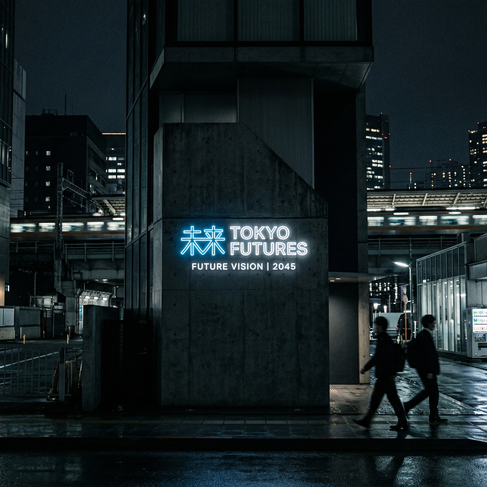
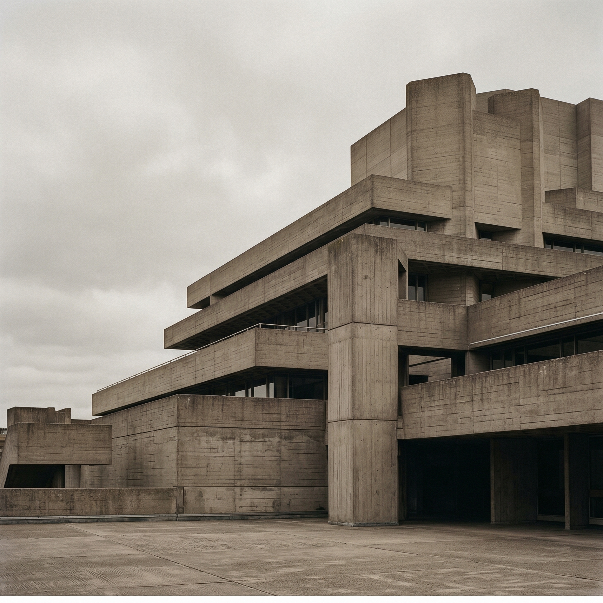
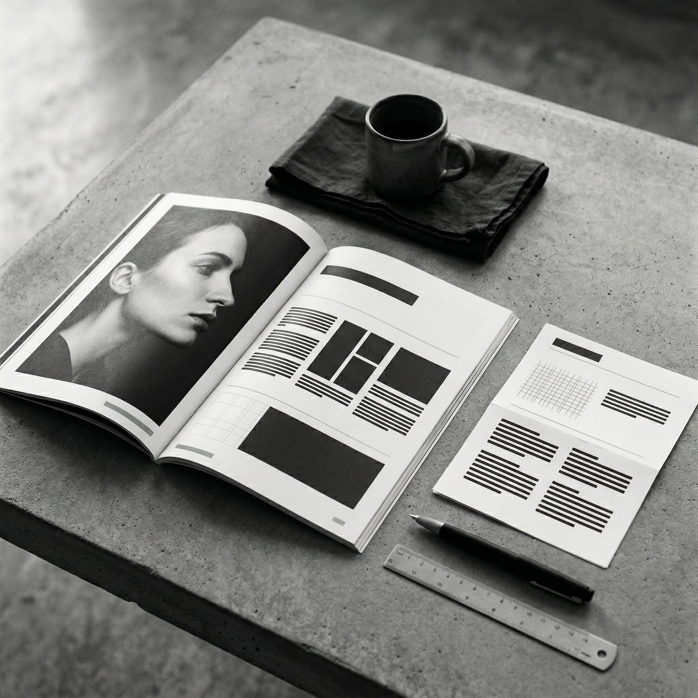

Alex Morgan
Art Director & Concept Designer
I am a multidisciplinary art director focused on visual storytelling and brand identity. With over 10 years of experience, I craft digital experiences that are minimal yet impactful.
My work spans across various mediums including digital, print, and spatial design. I believe in the power of silence in design, allowing the essential elements to speak for themselves without unnecessary noise.
Currently based in Tokyo, working with select clients globally to bring clarity and purpose to their visual language.
Selected Works
(2020 — Present)
01
Neo-Tokyo Branding
↗
Neo-Tokyo Branding
A comprehensive rebranding project for a futuristic urban development initiative in Tokyo. The visual identity focuses on stark contrasts and neon typography.

02
Silent Architecture
↗
Silent Architecture
Editorial design for a monograph on Brutalist architecture. The layout emphasizes negative space and heavy typography to mirror the concrete structures.

03
Mono Magazine
↗
Mono Magazine
A digital publication focusing on monochrome photography. The interface is stripped back to purely functional elements.

04
Aesthete Coffee
↗
Aesthete Coffee
Packaging and spatial design for a boutique coffee roaster. Natural textures meets sharp typography.
Get in touch
hello@alexmorgan.designClick to copy